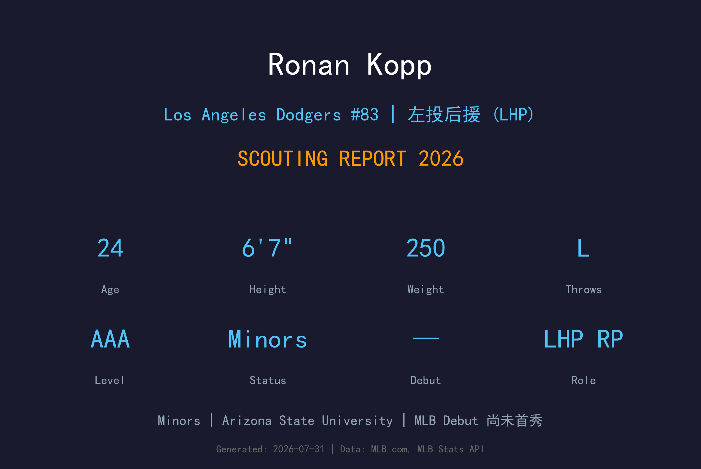
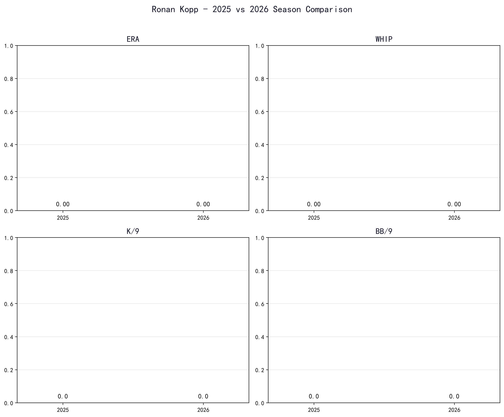
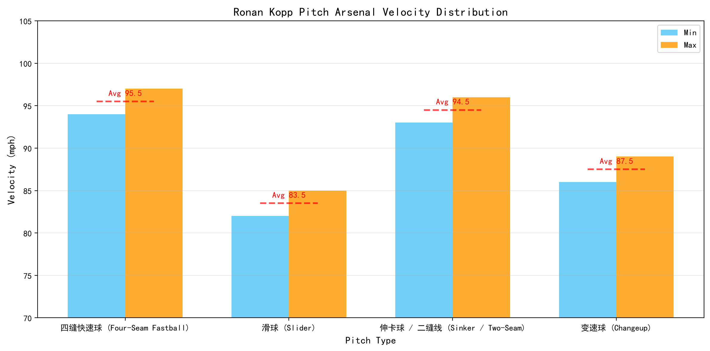
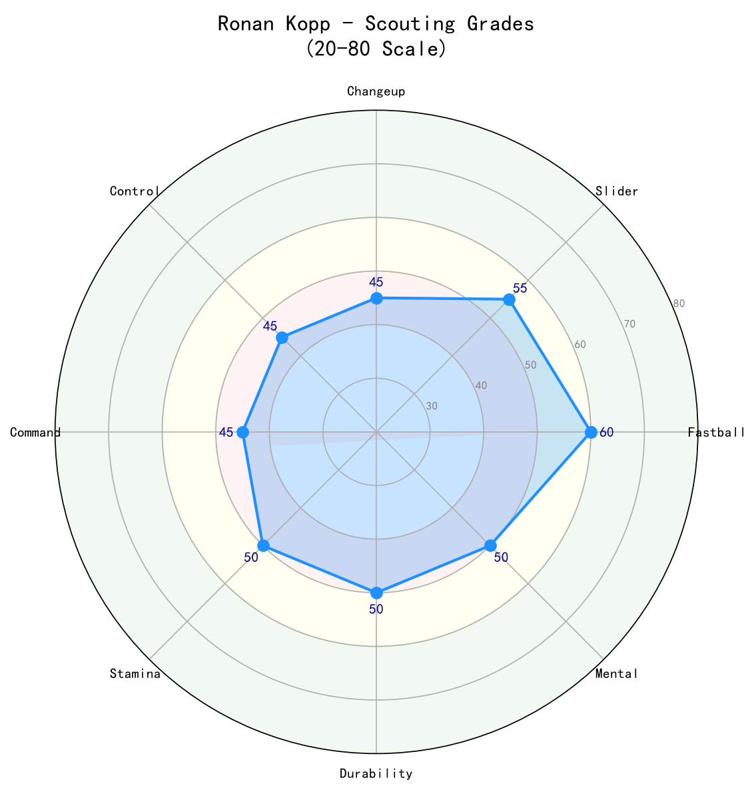

Los Angeles Dodgers #83 | 左投后援 (LHP) | Minors

Ronan Kopp 是道奇农场体系中备受瞩目的高大左投后援。身高 6 英尺 7 英寸、体重 250 磅的庞大身躯，让他在投手丘上拥有极具压迫感的存在感与陡峭的放球角度。
Kopp 尚未登上大联盟，但他在小联盟的持续成长让球探对他充满期待。作为一名左投，他的快速球与滑球组合已经具备大联盟后援的雏形；若能进一步提升控球与稳定性，他有望成为道奇未来牛棚的重要左投力量。
他的天花板取决于控球进步幅度与伤病管理。考虑到道奇牛棚对左投的持续需求，Kopp 是组织内值得长期培养的新秀之一。
Kopp 在亚利桑那州立大学展现潜力，凭借高大的身材与左投优势成为选秀市场上的热门名字。大学经验帮助他建立了基本的投球机制与比赛节奏。
道奇在选秀中选择 Kopp，看中他稀有的左投身材、伸卡潜质与未来发展空间。进入职业体系后，球队着重改造他的配球与控球。
在道奇农场体系中，Kopp 快速穿越低阶小联盟。他的三振能力出色，持续用球速与身材优势压制同层级打者，并逐步在高阶小联盟接受考验。
2026年 Kopp 位于俄克拉荷马城彗星队（Oklahoma City Comets），处于大联盟门槛。道奇球探与教练团持续监控他的控球进步，伺机给他上大联盟的机会。

📈 上图为近三年核心数据趋势。柱状图高度代表该年度表现，便于快速比较球员状态的上升或下滑。
| 赛季 | G | GS | W-L | ERA | IP | K | BB | WHIP | K/9 |
|---|---|---|---|---|---|---|---|---|---|
| 2025 | — | — | —-— | — | — | — | — | — | — |
| 2026 | — | — | —-— | — | — | — | — | — | — |

⚾ 上图为各球种球速区间（蓝=最低球速，橙=最高球速，红线=平均值）。球速差与位移差越大，打者越难锁定单一球路。
⚠️ Kopp 2025-26 赛季无 MLB 登板记录，以下为球探报告配球参考，球速区间来自 scouting 资料。
94-97 mph
Kopp 的招牌球种。凭借 6 尺 7 寸的放球高度与左投角度，快速球从打者视角极具压迫感，常能制造挥空与软弱击球。
82-85 mph
主要的三振与对左打者武器。横向位移明显，在两好球后能有效诱导追打。提升一致性与sharpness是下一步关键。
93-96 mph
利用高大身材制造的下坠角度，是 Kopp 的另一项潜力武器。若能稳定进垒，可显著提升 his ground-ball rate。
86-89 mph
尚在开发中的第四球种，用来对付右打者。当前使用频率低，但若发展成熟，将让他的轮值/后援价值更上一层楼。
6 尺 7 寸的身高让 Kopp 的放球点高于一般后援，打者较难判断球路轨迹。他的左投身份在牛棚市场中尤为稀缺，只要能稳定出赛，便具备很高战术价值。
高大的投手往往面临机械一致性挑战。Kopp 的快速球与滑球已有大联盟雏形，但能否持续把速球投进好球带边缘，将决定他是能成为 高杠杆 左投，还是仅仅是一名边缘牛棚。
短期内 Kopp 最可能以左投后援身份起步，面对左打者为主。若控球与变化球进步，他有机会成长为 multi-inning 后援，甚至挑战 布局（setup）角色。长期来看，道奇也可能尝试让他先发出赛。
年轻投手都需要重视工作管理。Kopp 目前健康，但道奇会谨慎控制他的局数与连续出赛频率，以保护他宝贵的左投手臂。

拥有罕见身材与左投优势的新秀后援，球速与滑球已达大联盟门槛。控球与经验是他能否站稳大联盟的关键变量。
B- 级 / 潜力左投后援
Kopp 的未来取决于控球进步速度。他具备成为道奇牛棚稳定左投的身体条件，但需要在 AAA 持续证明可以把球投进好球带，并减少保送与中心击球。
2026 下半季：继续于 AAA 出赛，争取获得大联盟首次征召。
2027：若控球进步，有机会成为道奇牛棚左投选项，出赛 30-50 场。
2028+：若快速球与滑球组合稳定，有望成为 布局（setup）级别的左投后援。
Ronan Kopp 出生于美国密歇根州，身高 6 英尺 7 英寸、体重 250 磅，是道奇农场中体型最醒目的投手之一。他在亚利桑那州立大学（Arizona State University）完成大学生涯，凭借左投与身材优势进入职业棒球。
加盟道奇后，Kopp 在教练团指导下逐步改造配球与投球机制。球队希望将他的身材优势转化为稳定的速球压制力，同时改善他的控球问题。
场外，Kopp 以谦逊与努力著称。他深知自己并非完成品，经常在牛棚中加练滑球与变速球。队友与教练都认为他是农场体系中进步最快的年轻投手之一。